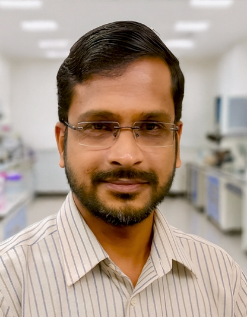
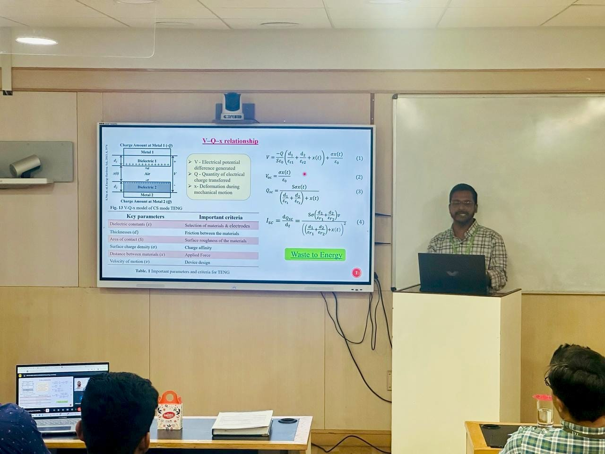
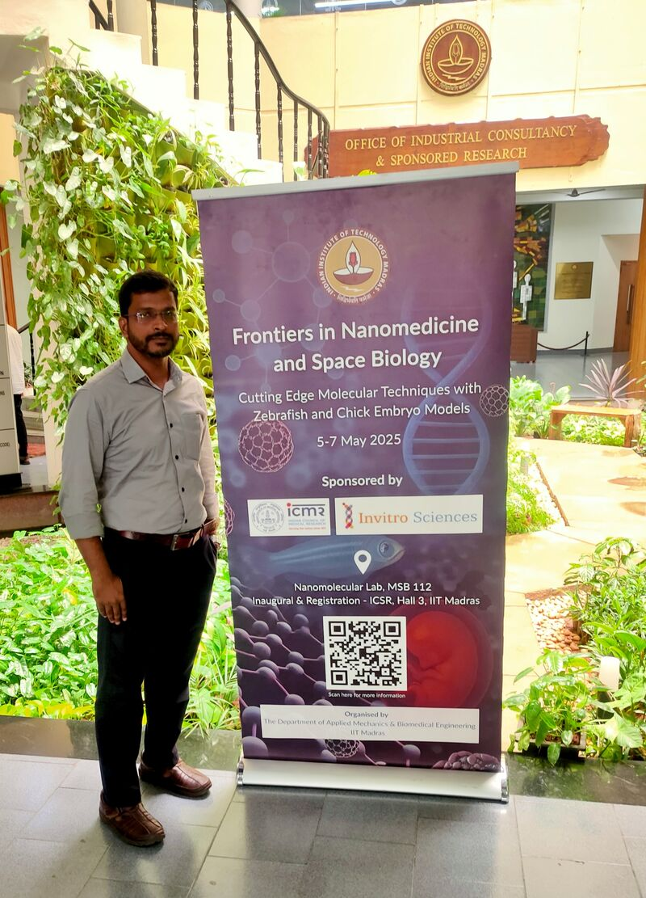
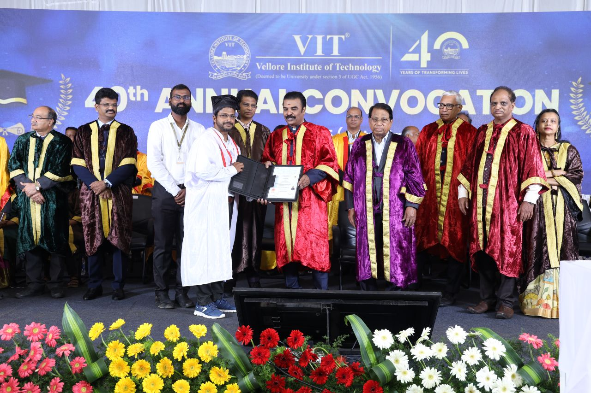
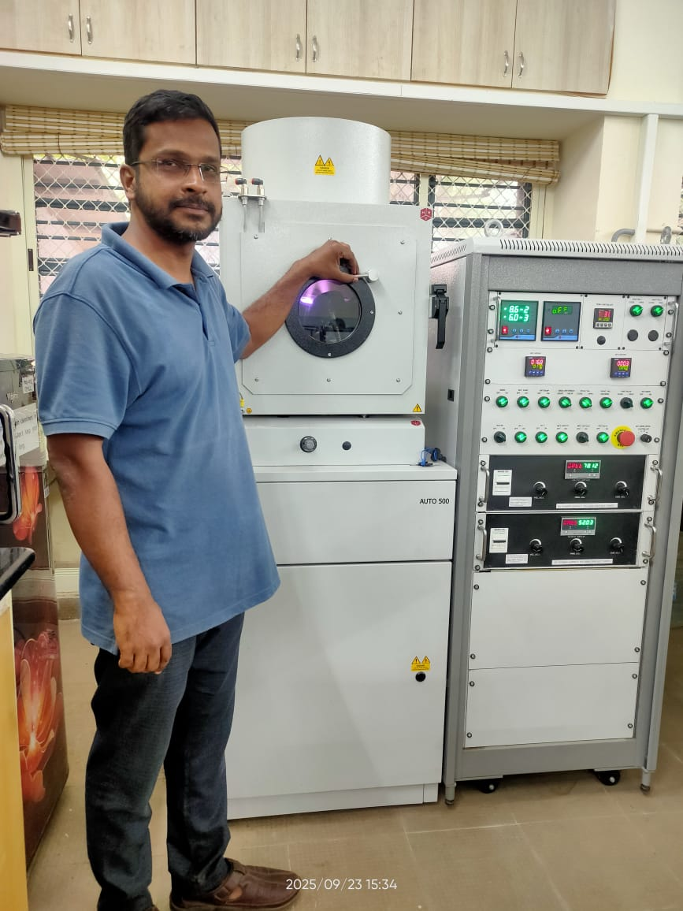

2014–2021
ACADEMIC POSITION
Assistant Professor
Malabar College of Engineering & Technology, ThrissurTeaching, project guidance and academic activities across electronics, communication engineering and mechatronics.

ABOUT ME
I am Dr. Sayyid Abdul Basith V, a Postdoctoral Fellow in the Department of Applied Mechanics & Biomedical Engineering at the Indian Institute of Technology Madras. My research focuses on functional materials, triboelectric and piezoelectric nanogenerators, self-powered sensors and biomedical energy-harvesting technologies.
My doctoral research at Vellore Institute of Technology explored the upcycling of waste materials for triboelectric nanogenerators and self-sustainable sensing applications. Earlier, I served as an Assistant Professor in Electronics & Communication Engineering and Mechatronics at Malabar College of Engineering & Technology, Thrissur.
THE TIMELINE
Selected professional roles and academic milestones.
Teaching, project guidance and academic activities across electronics, communication engineering and mechatronics.
Research on upcycling waste materials for triboelectric nanogenerators and self-sustainable sensors under Prof. Arunkumar Chandrasekhar.
Successfully completed the doctoral oral examination.

Joined Applied Mechanics & Biomedical Engineering. Research includes multifunctional nanogenerators, hydrogel systems and biomedical electrical stimulation.
Participated in training on molecular techniques using zebrafish and chick embryo models.

Formal award of the doctoral degree during the 40th Annual Convocation.

Hands-on experimental work using the AUTO 500 magnetron sputtering system for thin-film deposition.

Published research on electrical-stimulation-assisted drug release, angiogenesis and wound healing in a CAM model.
EDUCATION
Vellore Institute of Technology · 2025
Anna University, Chennai · 2014
Cochin University of Science and Technology · 2011
Supervisor: Prof. Arunkumar Chandrasekhar
VIT Vellore · 2025